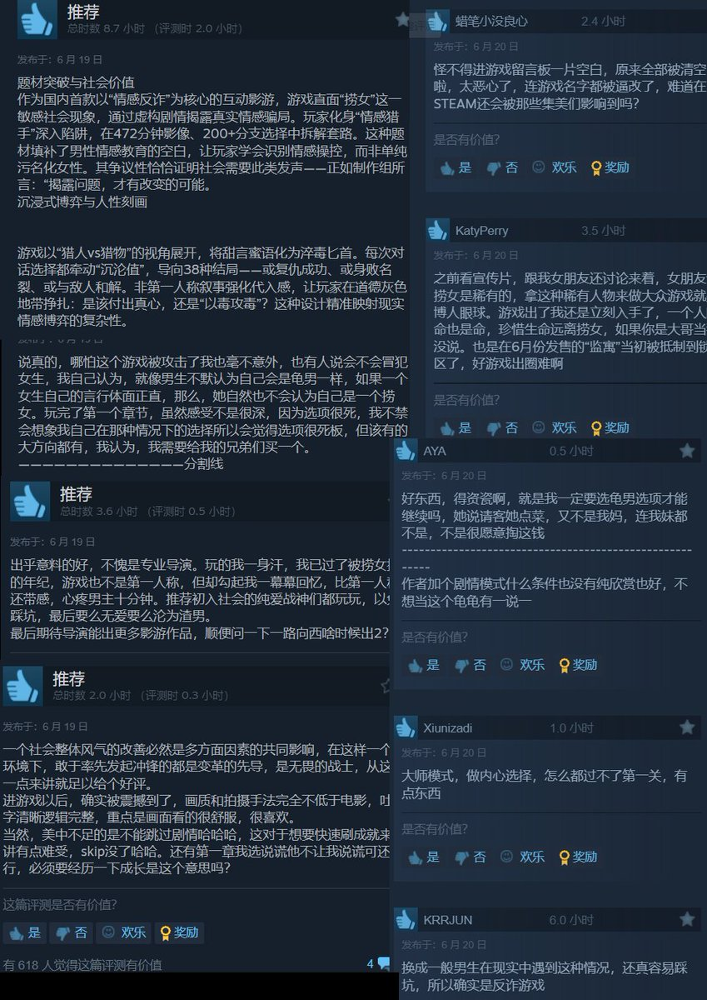

月影独下
@tadatsukiei
@whyyoutouzhele 有没有一种可能，捞女和渣男都是非正常生物，就和小偷骗子一样，是被所有人唾弃的，普通人看到对ta们的批判是不会自行带入、破口大骂的，毕竟咱是正常人啊，这些损害社会和谐的家伙，大家应该一起抵制啊，不是吗？
如果科普防盗防骗技巧，也要被辱骂举报的话，那这些家伙，很可能就是小偷、骗子。

李老师不是你老师
@whyyoutouzhele
6月19日，一款名为《捞女游戏》的游戏上架Steam平台。据介绍，该游戏通过影游方式，展现“教男生如何避免天价彩礼，如何防诈与反诈”，“捞女是如何被培养出来的”，并有人宣称这游戏“就是男生谈恋爱结婚避坑教程”。 https://t.co/Cs0z2Z8ZNX